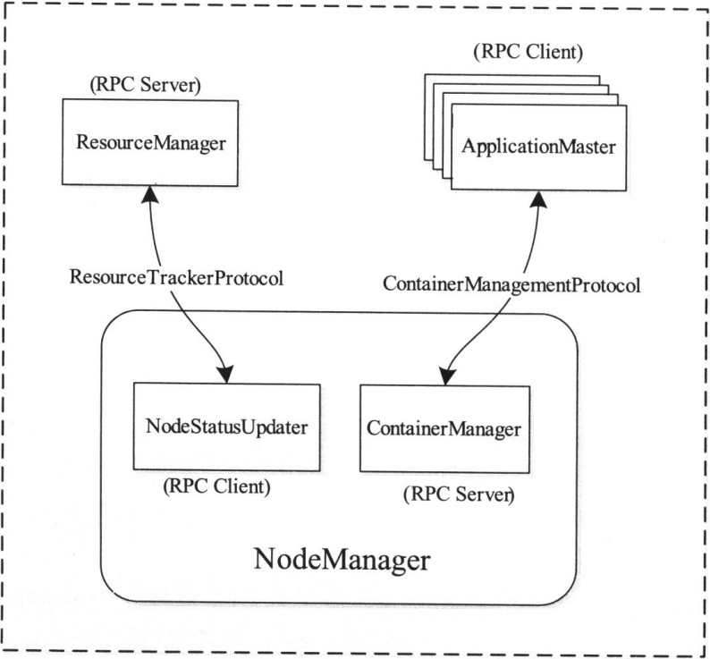
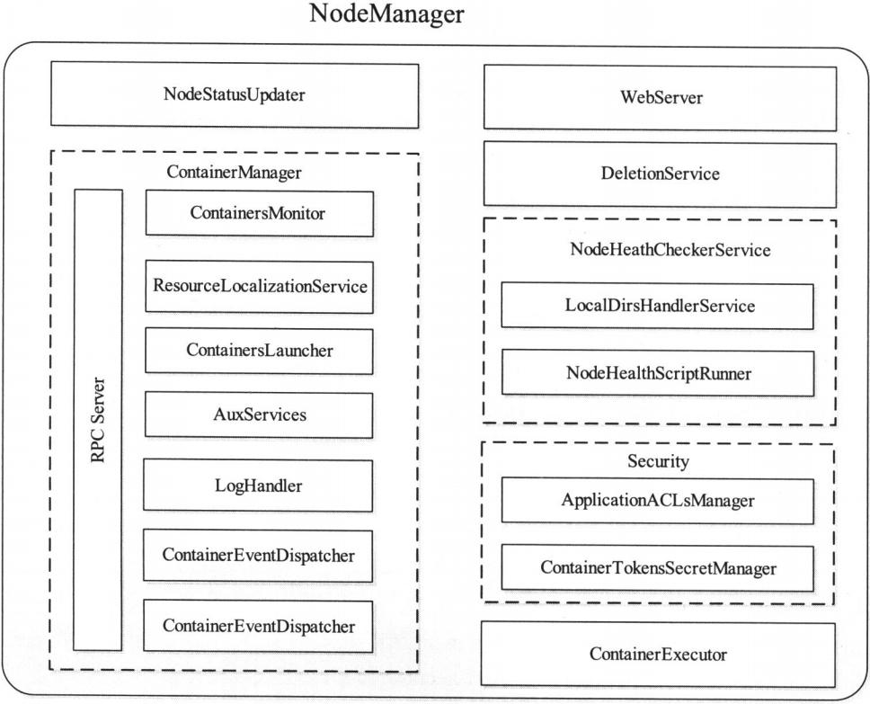

概述
NodeManager是运行在单个节点上的代理,它需要与应用程序的的ApplicationMaster和集群管理者ResourceManager交互: 从ApplicationMaster上接收有关Container的命令并执行之(比如启动,停止Container); 向ResourceManager汇报各个Container运行状态和节点健康状况,并领取有关Container的命令(比如清理Container)执行之
NodeManager是YARN中单个节点上的代理,它管理Hadoop集群中单个计算节点,功能包括与ResourceManager保持通信,管理Container的生命周期,监控每个Container的资源使用(内存,CPU等)情况,追踪节点健康状况,管理日志和不同应用程序用到的附属服务
NodeManager基本职能
NodeManager需通过两个RPC协议与ResourceManager服务和各个应用程序的ApplicationMaster交互

ResourceTrackerProtocol协议
NodeManager通过该RPC协议向ResourceManager注册,汇报节点健康状况和Container运行状态,并领取ResourceManager下达的命令,包括重新初始化,清理Container占用资源等.在该RPC协议中,ResourceManager扮演RPC Server的角色,而NodeManager扮演RPC Client的角色
ResourceTrackerProtocol协议主要提供了以下两个RPC函数
(1) registerNodeManager
NodeManager启动时通过该RPC函数向ResourceManager注册,注册信息由RegisterNodeManagerRequest封装的,包括如下三部分内容 :
- httpPort : 该NodeManager对外提供的HTTP端口号,ResourceManager会在界面上提供一个可直接访问NodeManager Web界面的超链接
- nodeId : 该NodeManager所在的host和对外的RPC端口号
- totalResource : 该NodeManager所在节点总的可分配资源,当前支持内存和虚拟CPU两种资源,管理员可通过参数yarn.nodemanager.resource.cpu-vcores和yarn.nodemanager.resource.memory-mb配置
ResourceManager将通过registerNodeManager函数向NodeManager返回一个RegisterNodeManagerResponse类型的对象,主要包含以下信息 :
- MasterKey : 新生成的Container Token和Node Token的Master Key
- NodeAction : ResourceManager向该NodeManager返回的下一步操作,主要包括NORMAL,RESYNC,SHUTDOWN三种,分别表示正常,重新同步信息和停止运行
- rmIdentifier : ResourceManager的标示符,NodeManager通过该标识符判断ApplicationMaster发送的Container来自原始的还是新启动的ResourceManager
- diagnosticsMessage : NodeManager注册失败时,将收到一段诊断信息,告知具体的失败原因
(2) nodeHeartbeat
NodeManager启动后,定期通过该RPC函数向ResourceManager汇报Container运行信息和节点健康状况,并领取新的命令,比如杀死一个Container
ContainerManagementProtocol协议
应用程序的ApplicationMaster通过该RPC协议向NodeManager发起针对Container的相关操作,包括启动Container,杀死Container,获取Container
ContainerManagementProtocol协议主要提供了以下三个RPC函数 :
- startContainer : ApplicationMaster通过该RPC要求NodeManager启动一个Contaienr.该函数有一个StartContainerRequest类型的参数,封装了Container启动所需的本地资源,环境变量,执行命令,Token等信息.如果Container启动成功,则该函数返回一个StartContainerResponse对象
- stopContainer : ApplicationMaster通过该RPC要求NodeManager停止(杀死)一个Container.该函数有一个StopContainerRequest类型的参数,用于指定待杀死的Container ID.如果Container被成功杀死,则该函数返回一个StopContainerResponse对象
- getContainerStatus : ApplicationMaster通过该RPC获取一个Container的运行状态.该函数参数类型为GetContainerStatusRequest,封装了目标Container的ID,返回值为封装了Container当前运行状态的类型为GetContainerStatusResponse的对象
NodeManager内部架构
NodeManager内部组织结构和主要模块
- NodeStatusUpdater : NodeStatusUpdater是NodeManager与ResourceManager通信的唯一通道
- ContainerManager : ContainerManager是NodeManager中最核心组件之一,它由多个子组件构成,每个子组件负责一部分功能,协作共同管理运行在该节点上的所有Container.各个子组件如下
- RPC Server : 该RPC Server实现了ContainerManagementProtocol协议,是ApplicationMaster与NodeManager通信的唯一通道
- ResourceLocalizationService : 负责Container所需资源的本地化.它能够按照描述从HDFS上下载Container所需的文件资源,并尽量将它们分摊到各个磁盘上以防止出现访问热点.此外,它会为下载的文件添加访问控制限制,并为之施加合适的磁盘空间使用份额
- ContainersLauncher : 维护了一个线程池以并行完成Container相关操作,比如启动或者杀死Container,其中启动Container请求是由ApplicationMaster发起的,而杀死Container请求则可能来自ApplicationMaster或者ResourceManager
- AuxServices : NodeManager允许用户通过配置附属服务的方式扩展自己的功能,这使得每个节点可以定制一些特定框架需要的服务
- ContainersMonitor : ContainersMonitor负责监控Container的资源使用量
- LogHandler : 一个可插拔组件,用户可通过它控制Container日志的保存方式,即是写到本地磁盘上还是将其打包后上传到一个文件系统中
- ContainerEventDispatcher : Container事件调度器,负责将ContainerEvent类型的事件调度给对应Application的状态机ApplicationImpl
- ApplicationEventDispatcher : Application事件调度器,负责将ApplicationEvent类型的事件调度给对应Application的状态机ApplicationImpl
- ContainerExecutor : ContainerExecutor可与底层操作系统交互,安全存放Container需要的文件和目录,进而以一种安全的方式启动和清除Container对应的进程
- NodeHealthCheckerService : NodeHealthCheckerService通过周期性地运行一个自定义脚本和向磁盘写文件检查节点的健康状况,并将之通过NodeStatusUpdater传递给ResourceManager
- DeletionService : NodeManager将文件删除功能服务化,即提供一个专门的文件删除服务异步删除失效文件,这样可避免同步删除文件带来的性能开销
- Security : 安全模块是NodeManager中的一个重要模块,包含两部分
- ApplicationACLsManager : NodeManager需要为所有面向用户的API提供安全检查,如在Web UI上只能将Container日志显示给授权用户.该组件为每个应用程序维护了一个ACL列表,一旦收到类似请求后会利用该列表对其进行验证
- ContainerTokenSecretManager : 检查收到的各种访问请求的合法性,确保这些请求操作已被ResourceManager授权
- WebServer : 通过Web界面向用户展示该节点上所有应用程序运行状态,Container列表,节点健康状态和Container产生的日志等信息
